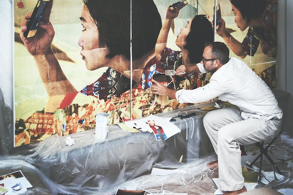

ARTISTIC WAY
One Stop For To Be At The Top For All Your Artistic Needs
HOME
Art and craft provide a platform for the artists for expressing their ideas and talents. We generally write or speak to others if we want to convey any message or talk about something. Have you ever thought that art and craft is another best way of conveying our message without speaking or writing? Many times we might have noticed that there are some of the paintings or crafts that try to convey to us some of the important messages. Therefore, it can be stated that we can also convey our feelings by utilizing the power of art and craft. Art and craft have been prevalent in different cultures and skills are being modified along with the changing time and technology. It is an important subject in the school and college curriculum of students. Moreover, it also helps in all-around development of the students.
ABOUT
- The first scented candles in the American colonies was bayberry, but it took a huge amount of bayberry leaves to produce a single candle.
- Women began forming sewing societies in the 1860’s where they would gather together and make quilts to sell at church bazaars.
- In 1908 the Sears and Roebuck catalogue brought arts and crafts style into most homes in the USA.
- Modern scrapbooking first emerged during the 1800s when photography was invented.
- From 1912-1948, the Olympic Games awarded medals for artworks inspired by sport.
SERVICES

Feedback Form
| ARTISTIC WAY | OTHER E-COMMERCE |
|---|---|
| Better quality | Compromised quality |
| Fast Delivery | Slow Delivery |
| Wide range of products | Limited products |
Go To
- Workshops we offer
- Pottery masterclass
- Painting masterclass
- Sculpting masterclass
- Conditions
- Discipline
- Patience
- Respect